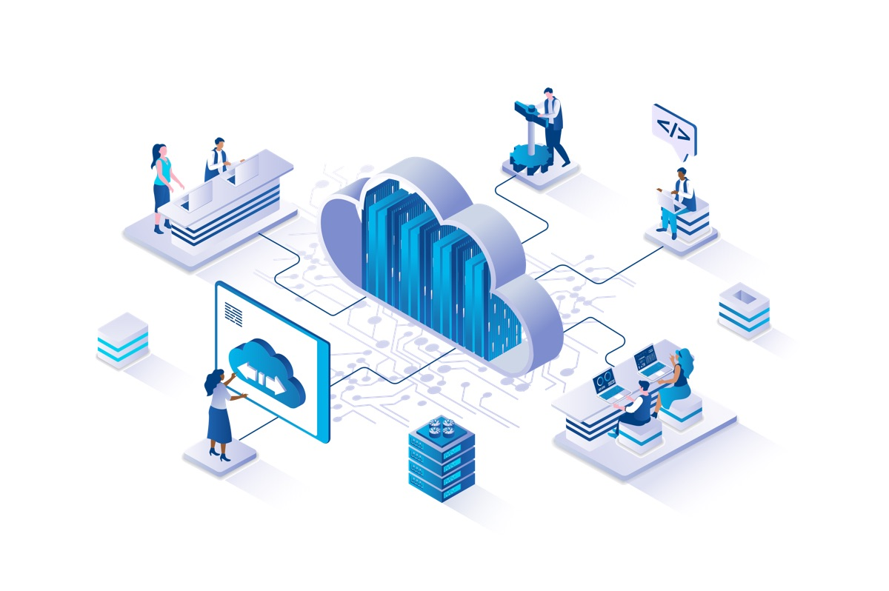
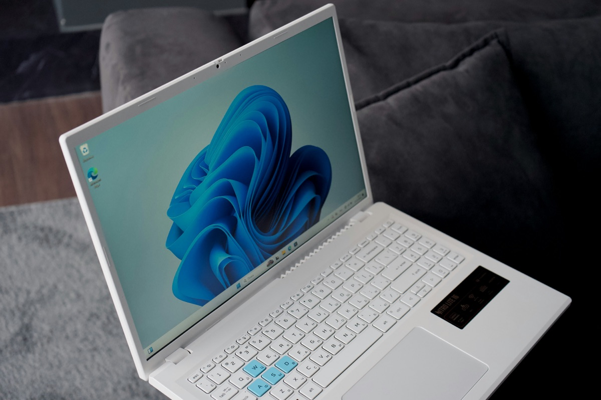
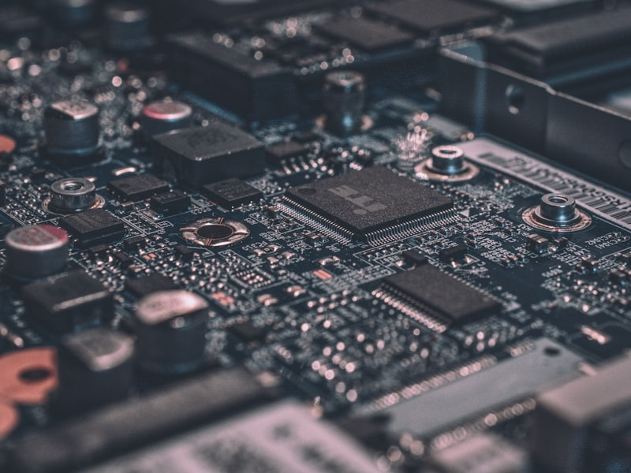

Pengenalan Dasar Teknologi Digital
Memahami konsep dasar transformasi digital, sejarah evolusi teknologi, dan fondasi perangkat keras serta lunak komputer
Agenda Pertemuan
Apa itu Transformasi Digital?
Konsep dan pengertian dasar
Konsep Digitalisasi
Digitisasi, digitalisasi, dan transformasi digital
Sejarah Teknologi Digital
Evolusi dari komputer pertama hingga era AI
Hardware & Software
Perangkat keras dan lunak komputer
Arsitektur & Sistem Operasi
Von Neumann, OS, dan Arduino
Dampak & Peran Teknologi
Transformasi digital di berbagai bidang
Apa itu Transformasi Digital?
Transformasi digital adalah proses integrasi teknologi digital ke dalam semua aspek kehidupan, mengubah cara kita bekerja, belajar, berkomunikasi, dan menjalani kehidupan sehari-hari.
Tidak hanya tentang teknologi, tetapi juga tentang perubahan mindset, proses, dan budaya.
"Digital transformation is not about technology — it's about strategy and new ways of thinking."
— Harvard Business Review
Konsep Digitalisasi
📄 Digitisasi
Mengubah bentuk analog
menjadi digital
(contoh: foto → file JPG)
⚙️ Digitalisasi
Mengubah proses manual
menjadi proses digital
(contoh: surat → email)
🚀 Transformasi Digital
Perubahan menyeluruh
dalam model bisnis & budaya
(contoh: ojek → ojol)
Sejarah & Evolusi Teknologi Digital
1940-an
Komputer pertama
(ENIAC, Colossus)
1970–80an
PC & Internet
(Apple, IBM, ARPANET)
2000-an
Web 2.0 & Media Sosial
(Facebook, YouTube)
2020-an
AI, IoT, Cloud
(ChatGPT, Smart City)
Perangkat Keras & Perangkat Lunak
🖥️ Perangkat Keras (Hardware)
- Input: keyboard, mouse, kamera, mikrofon
- Processing: CPU, GPU, RAM
- Storage: HDD, SSD, flash drive
- Output: monitor, printer, speaker
- Network: modem, router, switch
💿 Perangkat Lunak (Software)
- Sistem Operasi: Windows, macOS, Linux, Android
- Aplikasi: browser, office, editing
- Utility: antivirus, backup, compression
- Driver: penghubung hardware & OS
- Cloud/SaaS: Google Docs, Canva, Zoom
Organisasi & Arsitektur Komputer
📥 Input
Menerima data
dari perangkat masukan
🧠 CPU
ALU + Control Unit
Memproses instruksi
💾 Memory
RAM (sementara)
Storage (permanen)
📤 Output
Menampilkan hasil
ke perangkat keluaran
Sistem Operasi
Sistem operasi adalah perangkat lunak utama yang mengelola seluruh sumber daya komputer dan menjadi perantara antara pengguna dengan hardware.

Arduino & Sensor
Arduino adalah platform mikrokontroler open-source yang memungkinkan kita membuat proyek elektronik interaktif — jembatan antara dunia digital dan fisik.
Sensor adalah perangkat input yang mendeteksi perubahan di lingkungan fisik (suhu, cahaya, gerakan) dan mengubahnya menjadi sinyal digital.

Dampak Transformasi Digital
Kesehatan
Telemedicine, rekam medis elektronik, diagnosis berbasis AI
Pendidikan
E-learning, LMS, video conference, akses materi global
Keuangan
Mobile banking, e-wallet, QRIS, investasi digital
Pemerintahan
e-Government, layanan publik online, NIK digital
Perdagangan
E-commerce, marketplace, pengiriman same-day
Pertanian
Precision farming, drone monitoring, IoT sensor tanah
Peran Teknologi Digital dalam Perubahan Masyarakat
✅ Dampak Positif
- Akses informasi dan pendidikan lebih mudah
- Komunikasi lintas batas geografis
- Efisiensi dan produktivitas meningkat
- Peluang kerja dan bisnis baru
- Layanan publik lebih cepat dan transparan
⚠️ Tantangan
- Kesenjangan digital (digital divide)
- Keamanan data dan privasi
- Hoax dan misinformasi
- Kecanduan teknologi
- Dampak lingkungan (e-waste)
Post-Test: Uji Pemahaman
Post-Test: Jawaban
Rangkuman Pertemuan 1
Terima Kasih
Teknologi digital bukan sekadar alat — ia membentuk cara kita hidup, bekerja, dan berinteraksi. Memahami fondasinya adalah langkah pertama menjadi warga digital yang bijak.
Pertemuan 2: Sistem Bilangan Digital & Logika Digital